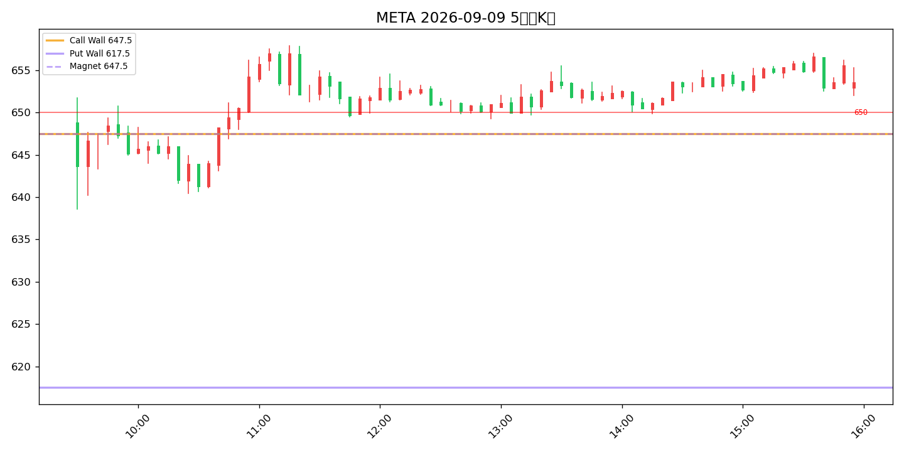

META
META 2026-09-09 周三
653.41 +0.74%
开 648.64 · 高 657.86 · 低 638.56
早盘分析
盘前预测·情况未发生｜发布时间 2026-09-09 07:27 MDT｜#junkman-analysis｜作者 junk_man
- 当前参考价 646.5939｜正负混合
- 647.5 CALL WALL｜647.5 MAGNET｜617.5 PUT WALL｜645 FLIP
5 分钟 K 线
K 线：Yahoo Finance
夜航社 heatmap 历史仅保留最近3个交易日，本日无 heatmap 数据；YHS flow 历史从 2026-10-02 起，本日无 flow 数据。

分析总结
开盘648.64，最高657.86，最低638.56，收653.41（+0.74%）。日内振幅19.30点。